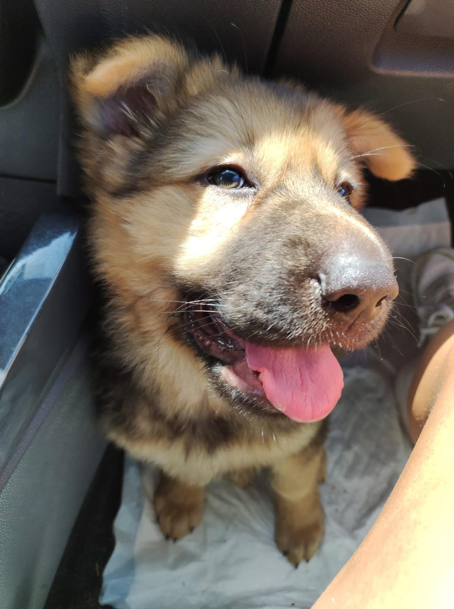
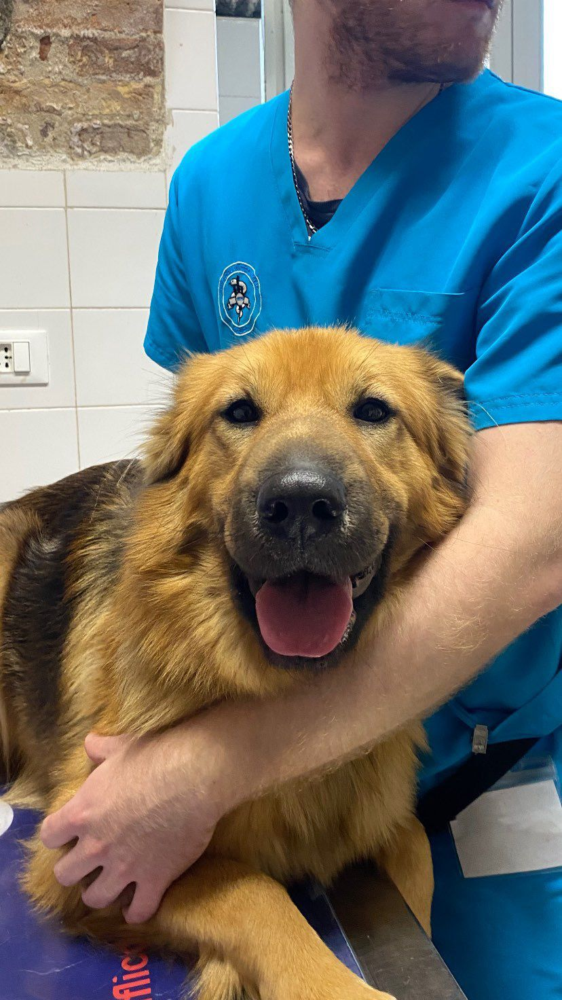
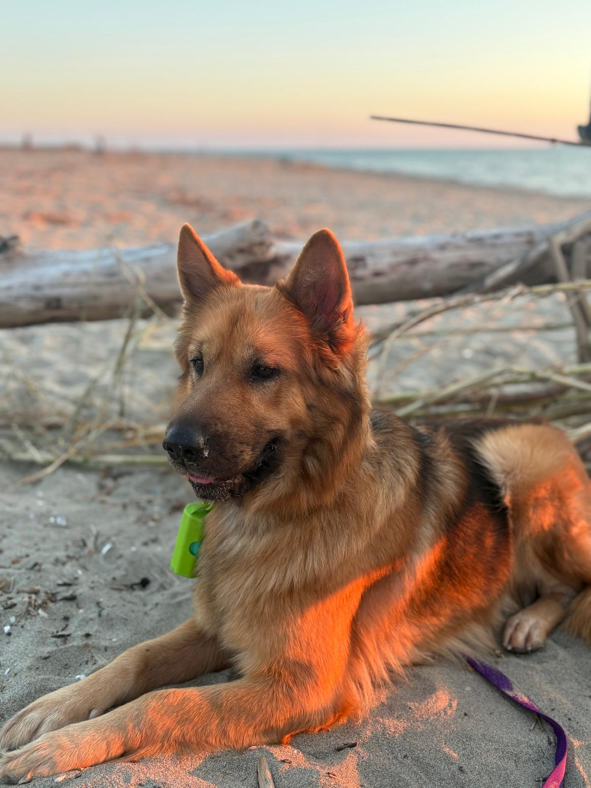
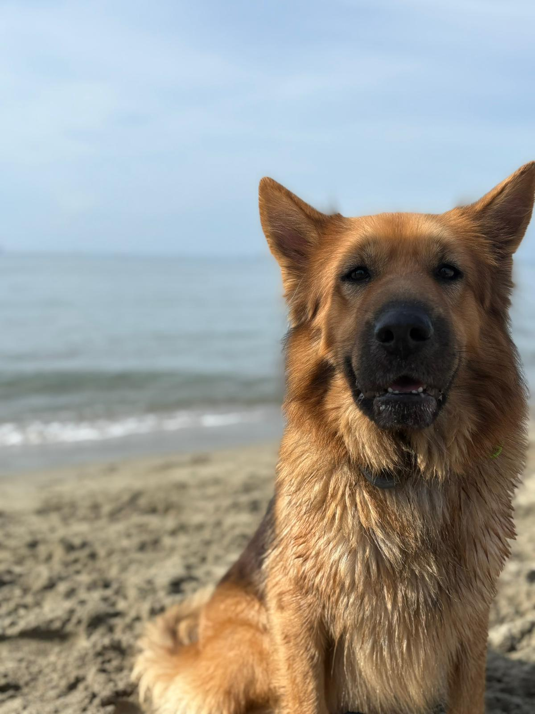
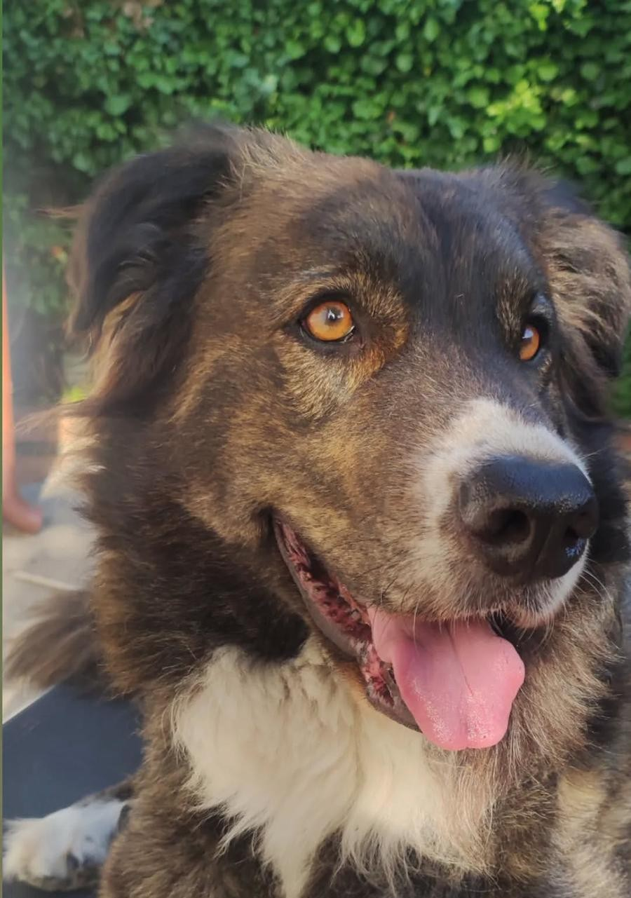
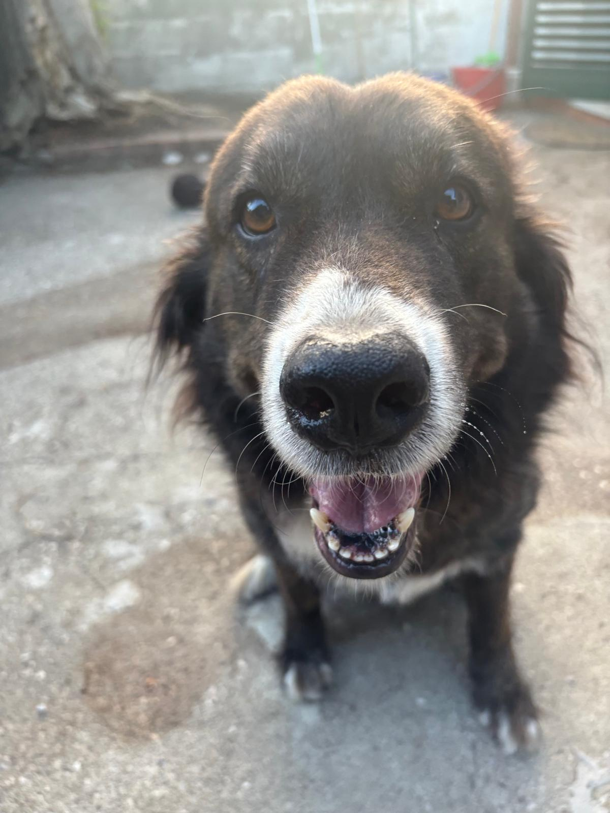
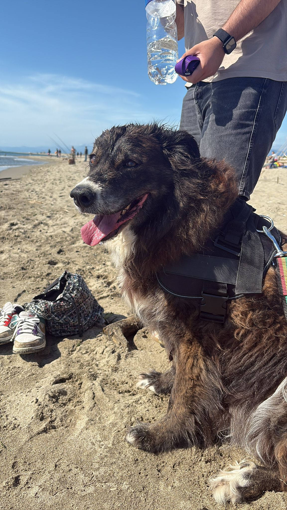
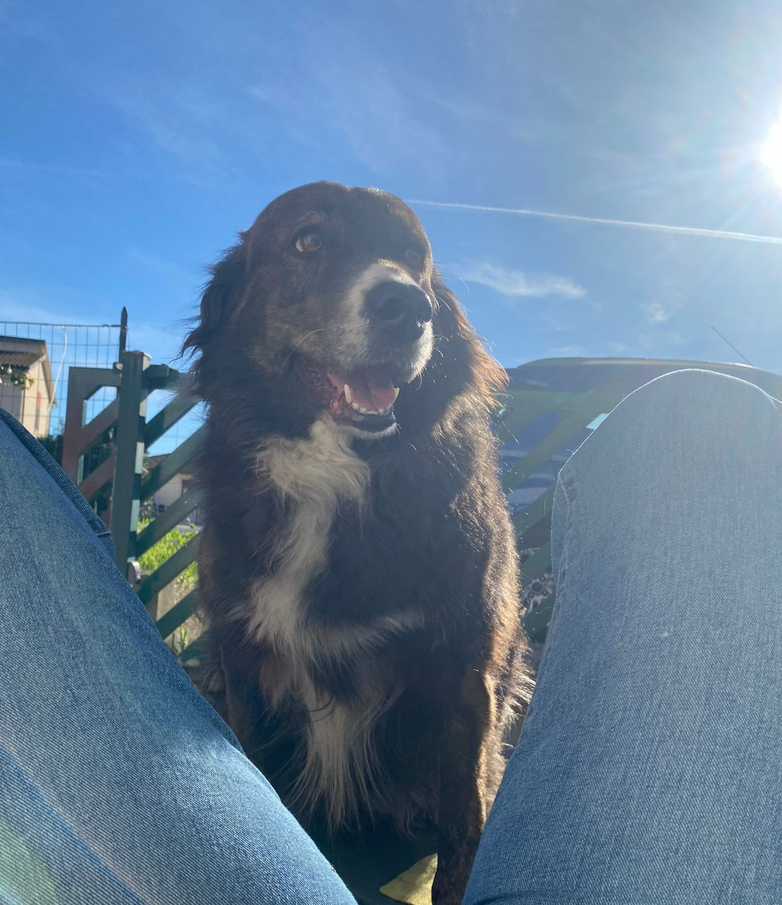

La storia di Pandora, la mia anima gemella.
Pandora è arrivata in un momento in cui cercavamo solo un po’ di tranquillità, nel mezzo del caos. La casa era in piena ristrutturazione: cemento ovunque, operai, impalcature. Forse il momento meno adatto per accogliere una vita così fragile.
Eppure, scorrendo distrattamente una pagina online dedicata alle adozioni, è bastato uno sguardo per innamorarmi. Non la stavo cercando, ma dal primo istante l’ho voluta con tutta me stessa.
Dopo alcuni colloqui, arrivò la risposta:
“È vostra. Partirà venerdì con il furgoncino. Tra due giorni vi incontrerete.”
E così, senza sapere davvero cosa ci aspettasse, ci siamo messi in macchina, pronti ad iniziare questa nuova avventura.
Pandora faceva parte, insieme al suo fratellino, di quella che online veniva definita “l’ultima cucciolata sfortunata”.
Era figlia di un pastore tedesco abbandonato, trovato a vagare nelle campagne di Frosinone. Recuperata e affidata alle cure di volontari, aveva potuto partorire in condizioni dignitose, con acqua e assistenza — tutto ciò che le era mancato per strada.
Quando Pandora è arrivata da noi, aveva poco più di un mese.
La vita non regala nulla a queste creature, e io ho sempre sentito il dovere di fare la mia parte. Sono cresciuta con un insegnamento semplice: “dallo stesso piatto, come mangia uno, si mangia in tre.”
I primi tempi non sono stati facili. Dal veterinario, tra una risata e l’altra, mi dissero che forse il suo nasino gonfio era dovuto alla puntura di un’ape. Ma con analisi più approfondite scoprimmo che era un incrocio con uno shar-pei. Il suo nome le fu dato dalla ragazza che la trovò e io quando la presi in braccio la prima volta sentii che quel nome le apparteneva.
Pandora oggi ha cinque anni, è in salute e, soprattutto, è cambiata. Insieme abbiamo fatto un percorso per aiutarla a trovare sicurezza in sé stessa. Veniva da un contesto difficile: un canile con decine di cuccioli, rumore costante, paura continua. Viveva in uno stato d’ansia che sembrava non darle tregua.
Oggi, invece, corre libera al parco. Io le cammino accanto, come una presenza discreta: la osservo da lontano, pronta ad intervenire, ma senza impedirle di vivere la sua libertà.
Ama il mare, le lunghe passeggiate, e mangerebbe in continuazione. Viene con me ovunque: in vacanza, a fare la spesa, in ogni luogo dove è ammessa.
Non è il classico cane da coccole, anzi. Ama i suoi spazi. Ma quando desidera una carezza, sa come cercarti.
Abbiamo costruito un rapporto fatto di fiducia reciproca. Ed è proprio questa fiducia che, credo, ha reso possibile la sua rinascita.
Ma non solo la sua.
Il giorno in cui Pandora è entrata nella mia vita, anche io ho iniziato a rinascere. A piccoli passi, proprio come lei. Perché il mondo, a volte, fa paura da soli. Ma insieme… viene voglia di esplorarlo.





Ricordo ancora la prima volta che ha giocato con una pallina... era come se stesse scoprendo che il mondo poteva essere anche divertente e non solo un posto dove nascondersi.
"NON SEI TU CHE SCEGLI IL CANE, È LUI CHE SCEGLIE TE NEL MOMENTO IN CUI NE HAI PIÙ BISOGNO."
La storia di Macchia, la mia gigante buona.
Macchia, con il suo spirito da Border Collie e la stazza da Maremmano, è sempre stata l’anima della casa. O almeno lo era: oggi, con l’età che avanza, anche i piccoli sforzi diventano più difficili, e noi facciamo di tutto per non farla affaticare.
Nonostante le sue dimensioni, però, è convinta di essere un chihuahua… e noi, ovviamente, non abbiamo alcuna intenzione di contraddirla.
Anche lei, come Pandora, è arrivata quasi per caso: trovata online da mio padre in un pomeriggio in cui la vita gli sembrava fin troppo tranquilla. Forse aveva bisogno di qualcuno accanto… e aveva ragione. Il suo nome deriva da una piccola macchiolina bianca che aveva sul petto in mezzo a tutto il suo pelo nero.
Provenienza? La Sicilia. E il suo amore smisurato per il cibo non lascia dubbi: 67 kg di pelo, sbavate e pura presenza. Purtroppo i canili al sud non sono in condizioni di massimo splendore, anzi, spesso sono letteralmente box in cui centinaia di bestioline vivono accatastate con la speranza che prima o poi qualcuno chiami per loro.
Per me Macchia è una zietta. Siamo cresciute insieme, imparando a proteggerci e a capire cosa significhi davvero sentirsi “a casa”. Guardandola rivivo momenti che hanno segnato il passaggio dalla mia adolescenza all’età adulta.
È la coccolona della famiglia: se qualcuno si avvicina al cancello tira fuori tutta la forza e il carattere da Maremmano, ma appena entri… sei spacciato. Pretende attenzioni infinite, zampa dopo zampa, e si offende se smetti di accarezzarla.
La domenica mattina è sempre con me — soprattutto vicino alla cucina, in attesa di un assaggio — ma alla fine è una compagnia che non cambierei per nulla al mondo. Da piccola ho persino provato a darle un po’ di caffè… salvo poi scoprire che le faceva male. Peccato, avrei avuto un’ottima compagna di gossip!
Sappiamo che il tempo con lei non è infinito, ma speriamo di averne ancora il più possibile. La sua impronta, però, è già indelebile: vive nei nostri cuori… e anche sulla nostra pelle.





È la prova che, anche dietro un animale così grande e imponente, si nasconde la creatura più dolce del mondo!